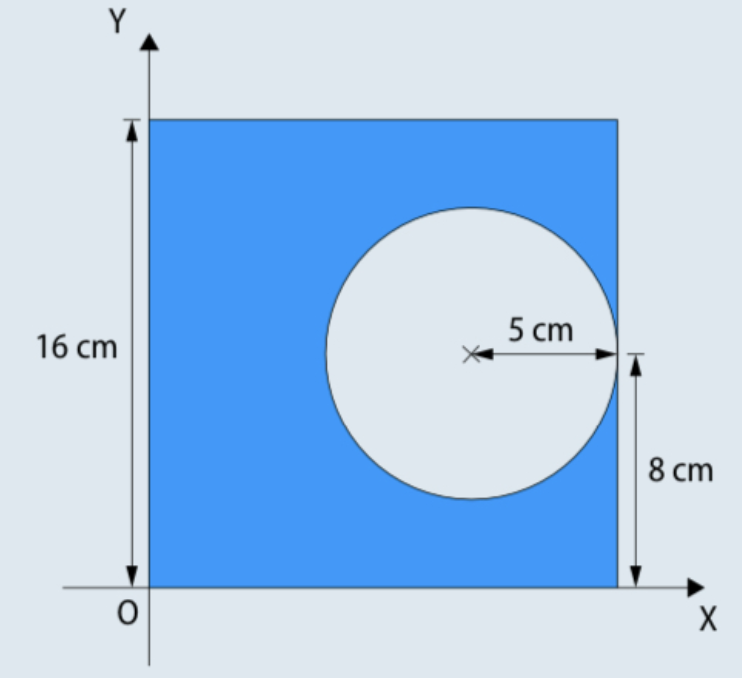
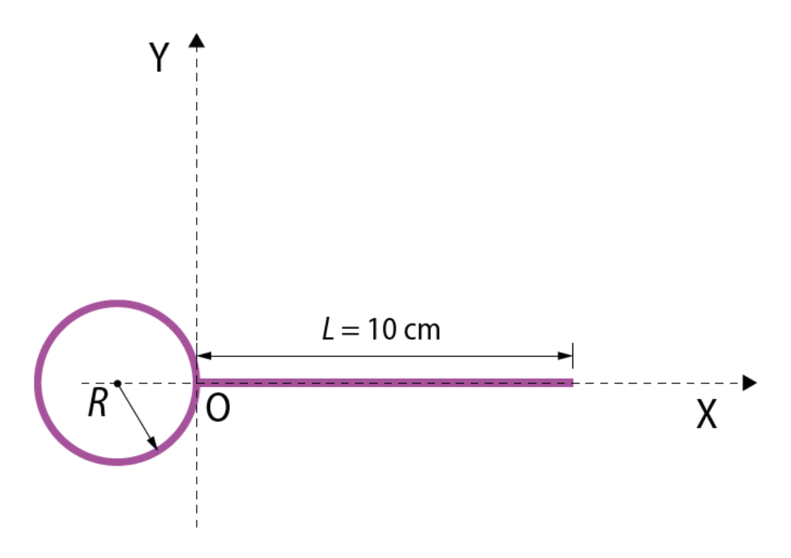
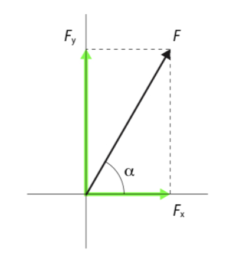
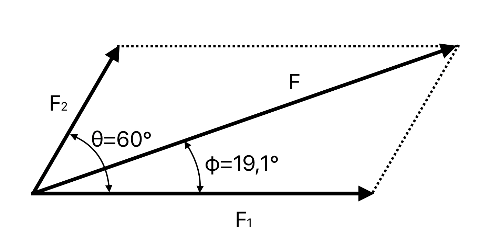
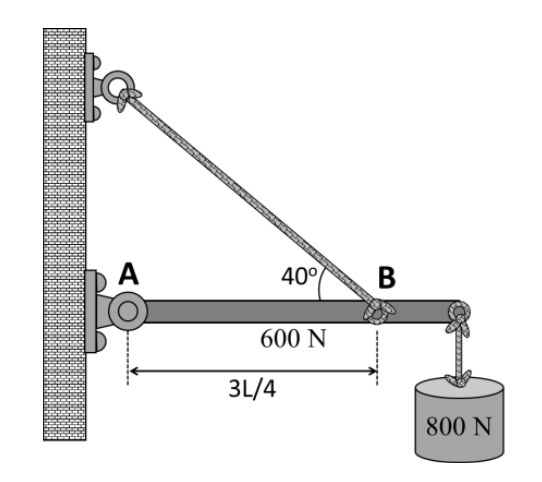
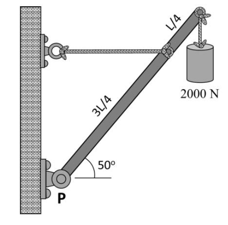
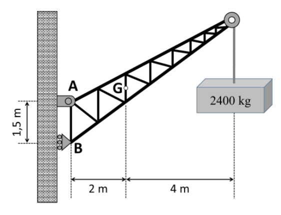

Contenido
Antes de calcular una estructura conviene separar cuatro ideas que no significan lo mismo:
- Equilibrio: la resultante de fuerzas y momentos es nula; el cuerpo no acelera ni gira.
- Resistencia: los elementos soportan las solicitaciones sin rotura ni fallo del material.
- Rigidez: las deformaciones se mantienen dentro de límites admisibles.
- Estabilidad: la estructura conserva su configuración resistente y no vuelca ni pierde estabilidad por fenómenos como el pandeo.
En esta unidad calcularemos el equilibrio estático y los esfuerzos N/V/M. Las comprobaciones de resistencia, rigidez y estabilidad pertenecen al dimensionado y no se deducen solo de que se cumplan las ecuaciones de equilibrio.
Cuándo usar cada herramienta
Usa las componentes vectoriales cuando aparezca una fuerza inclinada y el momento cuando calcules reacciones. El centro de gravedad se desarrolla en el desplegable siguiente.
Centro de gravedad
3.1 Centro de gravedad
El concepto del centro de gravedad es fundamental en el diseño de estructuras, en la física, en la ingeniería, y en muchas otras disciplinas que dependen del equilibrio y la estabilidad de los cuerpos.
El centro de gravedad de un cuerpo es el punto en el cual se puede considerar que está concentrado todo su peso o masa, en términos de cómo la gravedad actúa sobre él. En otras palabras, es el punto en el que las fuerzas de gravedad que actúan sobre cada una de las partículas que componen el cuerpo se equilibran y suman, permitiendo que el objeto se comporte como si todo su peso estuviera concentrado en ese lugar.
Características del centro de gravedad:
- Equilibrio: si un cuerpo se sostiene en su centro de gravedad, este se mantendrá en equilibrio sin inclinarse hacia ningún lado.
- Distribución de masa: la ubicación del centro de gravedad depende de cómo esté distribuida la masa del objeto. En objetos homogéneos (con distribución uniforme de masa), el centro de gravedad suele coincidir con el centro geométrico del objeto.
- Posición del centro de gravedad: El centro de gravedad no siempre está dentro del objeto; puede encontrarse fuera del cuerpo, dependiendo de la forma y distribución de su masa. Por ejemplo, en un aro o un anillo, el centro de gravedad está en el centro del espacio vacío.
En un objeto irregular, como una silla, el centro de gravedad estará en algún punto dependiendo de cómo esté distribuida su masa, que puede no coincidir con su centro geométrico. Para calcular el centro de gravedad en estos casos, hay que descomponer el cuerpo en objetos más pequeños que sí sean homogéneos, y calcular el centro de gravedad así:
Fórmulas del Centro de Gravedad
\[X_{G}=\frac{\sum m_{i} \cdot X_{i}}{M} \quad ; \quad Y_{G}=\frac{\sum m_{i} \cdot Y_{i}}{M}\]
Donde:
- \(X_G, Y_G\): coordenadas del centro de gravedad del cuerpo completo.
- \(m_i\): masa del objeto “\(i\)”.
- \(X_i, Y_i\): coordenadas del centro de gravedad del objeto “\(i\)”.
- \(M\): masa total del cuerpo completo.
Si tenemos un cuerpo con orificios, podemos considerar estos como objetos de masa negativa, a efectos de calcular el centro de gravedad global.
Ejemplo de cálculo del centro de gravedad
Halla las coordenadas del centro de gravedad de la chapa cuadrada agujereada de la de la figura:

Llamamos “\(L\)” a la longitud de los lados de la chapa (\(L = 16 \text{ cm}\)) y “\(r\)” al radio del orificio (\(r = 5 \text{ cm}\)).
Podemos calcular fácilmente los centros de gravedad de la chapa sin agujero y del propio agujero.
Por simetría, la posición de dichos CG es el centro geométrico de cada una de esas figuras:
- Chapa sin orificio (centro del cuadrado): \(X_{CH} = L / 2 = 8 \text{ cm}\); \(Y_{CH} = L / 2 = 8 \text{ cm}\).
- Orificio (centro del círculo): \(X_{O} = L - r = 16 - 5 = 11 \text{ cm}\); \(Y_{O} = L / 2 = 8 \text{ cm}\).
La superficie de cada una de esas figuras es la siguiente:
- Chapa sin orificio: \(S_{CH} = L \cdot L = 16 \cdot 16 = 256 \text{ cm}^2\)
- Orificio: \(S_{O} = -\pi \cdot r^2 = -\pi \cdot 5^2 = -78,54 \text{ cm}^2\)
El orificio hay que quitárselo a la chapa, por eso hemos calculado su superficie con un signo negativo, para que vaya restando en la expresión final (sería como si lo considerásemos con masa o superficie negativa)
Así, combinando las dos figuras, la posición del centro de gravedad global será la siguiente:
\[X_{G}=\frac{\sum S_{i} \cdot X_{i}}{S} = \frac{S_{CH} \cdot X_{CH} + S_{O} \cdot X_{O}}{S_{CH} + S_{O}} = \frac{256 \cdot 8 - 78,54 \cdot 11}{256 - 78,54} = 6,67 \text{ cm}\]
\[Y_{G}=\frac{\sum S_{i} \cdot Y_{i}}{S} = \frac{S_{CH} \cdot Y_{CH} + S_{O} \cdot Y_{O}}{S_{CH} + S_{O}} = \frac{256 \cdot 8 - 78,54 \cdot 8}{256 - 78,54} = 8 \text{ cm}\]
3.1.1 Ejercicio propuesto
1. Dada la pieza siguiente, realizada en alambre de grosor homogéneo, calcula el radio de la forma circular que hará que el centro de masas del sistema esté justo en el punto de unión de la forma recta y la circular. (Solución: R = 2,82 cm)

3.2 Componentes vectoriales de una fuerza
Las fuerzas son magnitudes vectoriales definidos por: Módulo, Punto de aplicación, Dirección y Sentido.
Dada una fuerza \(F\) cuya dirección forma un ángulo \(\alpha\) con el eje horizontal (\(X\)):
Componentes rectangulares
\[F_{X} = F \cdot \cos \alpha\] \[F_{Y} = F \cdot {\operatorname{sen}} \alpha\]
Expresión vectorial: \[\vec{F} = F_{X} \cdot \vec{i} + F_{Y} \cdot \vec{j}\]
Cálculo inverso
- Módulo: \(F = \sqrt{F_{X}^{2} + F_{Y}^{2}}\)
- Dirección: \(\tan \alpha = \frac{F_Y}{F_X}\)

Ejemplo resuelto. Descomposición de fuerzas.
Una persona tira de una cuerda atada a una piedra con una fuerza de 400 N. Si el ángulo que forma la cuerda con la horizontal es de 40º, calcular:
- La fuerza que tiende a elevar la piedra
- La fuerza que tiende a arrastrar la piedra
Solución
El vector de la fuerza aplicada con un ángulo \(\alpha = 40^{\circ}\) se descompone en dos vectores de fuerza, uno horizontal \(F_X\) y otro vertical \(F_Y\).
El vector de la fuerza vertical que tiende a elevar la piedra será: \[F_{Y}=F \cdot {\operatorname{sen}} \alpha =400 \cdot {\operatorname{sen}} 40^{\circ}=257,12 \text{ N}\]
El vector de la fuerza horizontal que tiende a arrastrar la piedra será: \[F_{X}=F \cdot \cos \alpha =400 \cdot \cos 40^{\circ}=306,42 \text{ N}\]
3.3 Fuerza resultante
Dos o más fuerzas son concurrentes cuando sus líneas de acción se cortan en un mismo punto. En ese caso podemos sustituirlas por una sola fuerza resultante equivalente.
Para calcular el valor de la fuerza resultante, se descompone cada fuerza en sus componentes \(F_X\), \(F_Y\), y se suman. Desde el punto de vista vectorial:
Suma vectorial
\[\vec{F}_{RES}=\sum_{i=1}^{n}\vec{F_{i}} =\vec{F_{1}}+\vec{F_{2}}+\cdots +\vec{F_{n}}\] \[\vec{F}_{RES}=(F_{1X}+F_{2X}+\cdots +F_{nX}) \cdot \vec{i}+(F_{1Y}+F_{2Y}+\cdots +F_{nY}) \cdot \vec{j}\]
Ejemplo resuelto. Fuerza resultante.
Tenemos dos fuerzas que se aplican desde un mismo punto, una de valor 100 N y otra de 50 N y cuyas direcciones forman un ángulo entre sí de 60º.
- Calcula el módulo del vector de la fuerza resultante.
- Calcula el ángulo que forma la resultante con la primera fuerza.
- Realiza la representación vectorial del sistema.
Solución
Primero expresamos vectorialmente las dos fuerzas, suponiendo que la primera fuerza es horizontal (forma 0º con el eje X) y que, por tanto, la segunda fuerza forma 60º con el eje X (porque están a 60º entre sí):
\[\vec{F_{1}}=F_{1X} \cdot \vec{i}+F_{1Y} \cdot\vec{j}=100 \cdot \cos 0^{o} \cdot\vec{i}+100 \cdot {\operatorname{sen}} 0^{o} \cdot\vec{j}=100 \cdot\vec{i}\] \[\vec{F_{2}}=F_{2X} \cdot \vec{i}+F_{2Y} \cdot\vec{j}=50 \cdot \cos 60^{o} \cdot\vec{i}+50 \cdot {\operatorname{sen}} 60^{o} \cdot\vec{j}=25 \cdot\vec{i}+25\sqrt{3} \cdot\vec{j}\]
Calculamos la fuerza resultante sumando vectorialmente las fuerzas \(\vec{F_{1}}\) y \(\vec{F_{2}}\):
\[\vec{F}=\vec{F_{1}}+\vec{F_{2}}=(100 \cdot \vec{i} )+(25 \cdot \vec{i}+25\sqrt{3} \cdot \vec{j})=125 \cdot \vec{i}+25\sqrt{3} \cdot \vec{j}\]
- Módulo de la fuerza resultante
El módulo de la fuerza resultante se calcula ya directamente al tener el vector:
\[F=|\vec{F}|=\sqrt{F_{X}^{2}+F_{Y}^{2}} =\sqrt{(125^{2}+(25\sqrt{3})^{2})}=132,29 \text{ N}\]
- Ángulo de la resultante con la primera fuerza.
Como la primera fuerza la hemos tomado en el eje X, el ángulo de la resultante con la primera fuerza es el ángulo de la resultante con el eje X. Por lo tanto, también lo podemos calcular directamente a partir del vector:
\[\varphi =\arctan \left (\frac{F_{Y}}{F_{X}} \right )=\arctan \left (\frac{25\sqrt{3}}{125} \right )=19,11^{o}\]
- Representación vectorial

3.4 Momento de una fuerza
Una fuerza cuya línea de acción no pasa por el punto O produce un momento respecto de O y tiende a hacer girar el cuerpo.
Momento respecto de O
La definición vectorial usa el vector posición desde O hasta cualquier punto de la línea de acción de la fuerza:
\[\vec{M}_O=\vec{r}\times\vec{F}\]
En problemas planos, su módulo es la fuerza por el brazo perpendicular, con el signo del convenio elegido:
\[M_O=F\,d_{\perp}\]
En el Sistema Internacional, el momento se mide en newtons-metro (N·m).
3.5 Condiciones de equilibrio
Para que un sólido se encuentre en equilibrio, deben darse dos condiciones fundamentales:
El sólido no debe trasladarse en ninguna dirección, por lo que la fuerza resultante de todas las fuerzas que actúen sobre él debe ser nula:
\[\sum \vec{F_{i}}=0\]
El sólido no debe girar en ningún eje, por lo que el momento resultante de todos los momentos que actúen sobre él debe ser nulo:
\[\sum \vec{M_{i}}=0\]
Estas condiciones pueden establecerse para cada uno de los tres ejes principales del espacio (x, y, z), por lo que tendríamos 6 ecuaciones de equilibrio de un sólido (tres con las fuerzas y tres con los momentos).
3.6 Ejercicios de aplicación
Ejercicios de aplicación
Practica con estos ejercicios. La tarea que debes entregar está en el apartado Práctica: comprobación de una barra con cable, al final de esta página, y utiliza tus dos casos aleatorios.
1. Una persona carga en un hombro una barra de madera de 2 m con un cubo en cada extremo. La carga de uno de los cubos es tres veces la del otro (F).
- Calcula el módulo vector de la fuerza resultante.
Consultar resultado después de intentarlo
(Solución: \(F_R = 4F \text{ N}\))
- Calcula el punto de apoyo de la barra para que la carga esté equilibrada.
Consultar resultado después de intentarlo
(Solución: \(x = 1,5 \text{ m}\) ; \(y = 0,5 \text{ m}\))
- Realiza la representación vectorial del sistema.
2. Una puerta de 400 N de peso y 2 m de alto por 1 m de ancho se soporta en dos bisagras que se sitúan a 1,5 m una de otra y la misma distancia de los extremos superior e inferior de la puerta. Supón que la bisagra inferior solo ejerce fuerza horizontal y que todo el peso de la puerta lo recoge la bisagra superior.
- Realiza la representación vectorial del sistema de fuerzas.
- Calcula el valor de las fuerzas que se ejercen en cada bisagra. (Solución: bisagra superior: \(F_R = 421,64 \text{ N}\) ; bisagra inferior: \(R = F_X = 133,33 \text{ N}\))
3 (PAU). En el sistema en equilibrio que se muestra en la figura adjunta, la viga uniforme de longitud L pesa 0,60 kN y está sujeta a un apoyo articulado fijo en el punto A y a una cuerda tensora en el punto B. En el otro extremo, la viga sujeta un peso de 0,80 kN.

Se pide:
- Dibujar el diagrama del sólido libre indicando correctamente el sentido de todas las fuerzas.
- Calcular la tensión en la cuerda tensora y las componentes de la fuerza de reacción que ejerce el apoyo articulado fijo sobre la viga.
Consultar resultado después de intentarlo
(Sol: \(F_T = 2281,7 \text{ N}\); \(F_{Rx} = 1747,9 \text{ N}\); \(F_{Ry} = -66,6 \text{ N}\))
4 (PAU). Un asta de peso 0,40 kN y densidad uniforme está suspendida como se muestra en la figura. En su extremo libre sujeta un peso de 2 kN.

Se pide:
- Dibujar el diagrama del sólido libre indicando correctamente el sentido de todas las fuerzas.
- Calcular la tensión en la cuerda y la fuerza que ejerce el pivote en P sobre el asta
Consultar resultado después de intentarlo
(Sol: \(F_T = 2,46 \text{ kN}\); \(F_R = 3,44 \text{ kN}\); \(\theta = 44º\))
5 (PAU). Para colgar un cartel en la fachada de un edificio, se usa una barra horizontal con un extremo fijo en la pared a cierta altura. El otro extremo de la barra se sujeta con un cable tensor que se fija a la pared 3,2 m por encima del apoyo fijo de la barra.
La barra mide 2,8 m de largo y su masa es despreciable. El cartel es cuadrado, de 1,9 m de lado y 52,3 kg. Cuelga del punto central de su lado superior mediante un cable fijado a la barra, de modo que el extremo derecho del cartel queda alineado con el extremo derecho de la barra. Toma \(g = 9,81 \text{ m/s}^2\).
Se pide:
- Dibujar el diagrama del sólido libre indicando correctamente el sentido de todas las fuerzas.
- Calcular la tensión del cable de soporte.
Consultar resultado después de intentarlo
(Sol: \(F_T = 450,44 \text{ N}\))
- Calcular las componentes horizontal y vertical de la reacción ejercida por la pared.
Consultar resultado después de intentarlo
(Sol: \(F_{Rx} = 296,61 \text{ N}\); \(F_{Ry} = 174,07 \text{ N}\))
6 (PAU). Una grúa fija tiene una masa de 1 000 kg y se usa para levantar un contenedor de 2 400 kg. Toma \(g = 9,81 \text{ m/s}^2\). La grúa se mantiene en su lugar por medio de un perno en A y un balancín en B. El perno es un tipo de anclaje fijo que permite rotaciones de la grúa, pero no traslaciones, y un balancín es un apoyo móvil tipo rodillo que permite rotaciones y traslaciones. El centro de gravedad de la grúa está ubicado en G de acuerdo con el siguiente dibujo:

Se pide:
- Dibujar el diagrama del sólido libre.
- Calcular la fuerza de reacción en los apoyos A y B.
Consultar resultado después de intentarlo
(Sol: \(A_x = 107,26 \text{ kN}\) izqda; \(A_y = 33,35 \text{ kN}\) arriba; \(B_x = 107,26 \text{ kN}\) dcha)
7 (PAU). Un tractor como el de la figura tiene una masa de 2 100 lb y se utiliza para levantar 900 lb de grava en su pala delantera. El tractor se apoya en las ruedas traseras y delanteras, que están separadas 60 in. El centro de gravedad del tractor se sitúa 20 in por delante de las ruedas traseras, y durante el transporte el centro de gravedad de la pala cargada se encuentra 50 in por delante de las ruedas delanteras.
Se pide:
- Dibujar el diagrama del sólido libre indicando correctamente el sentido de todas las fuerzas.
- Calcular las reacciones en ruedas traseras (apoyo A) y en las delanteras (apoyo B).
Consultar resultado después de intentarlo
(\(A_y = 2,89 \text{ kN}\); \(B_y = 10,47 \text{ kN}\))
Considerar 1 lb = 0,454 kg, 1 in = 2,54 cm y \(g = 9,81 \text{ m/s}^2\).
Práctica: comprobación de una barra con cable
Enunciado
Una barra horizontal homogénea está articulada a una pared y se sostiene mediante un cable. En su extremo cuelga una masa. Calcula la tensión del cable y las reacciones de la articulación, comprueba tus resultados y explica qué ocurre al mover el punto de unión del cable.
El trabajo es individual de principio a fin, incluido el uso del simulador. Al abrirlo encontrarás dos casos con datos aleatorios. Los dos mantienen la longitud de la barra, la altura del anclaje y las masas; solo cambia la distancia desde la articulación hasta la unión del cable.
Copia en tu informe todos los datos de los dos casos y su código antes de volver a pulsar «Aleatorio» o recargar la página. El botón genera un nuevo conjunto. Los botones «Caso 1» y «Caso 2» permiten alternar sin cambiar tus datos. No uses los datos ni las respuestas de otra persona.
Qué debes hacer
- Haz una copia de la plantilla de informe en Google Docs y registra los datos de tus dos casos.
- Para el caso 1, dibuja en tu cuaderno el diagrama de sólido libre con fuerzas, ejes y distancias. Plantea las ecuaciones de equilibrio y calcula T, Ax y Ay, con unidades. Anota tu predicción razonada del signo de Ay antes de comprobar.
- Pulsa «Comprobar» y registra el resultado. Si no coincide con tu cálculo, conserva el desarrollo inicial y explica la corrección.
- Selecciona el caso 2. Antes de mostrar los resultados, predice qué cambiará, dibuja su diagrama y realiza también los cálculos en el cuaderno. Después comprueba y compara.
- Añade al informe imágenes escaneadas o fotografías legibles de los diagramas y los desarrollos de cálculo de ambos casos. No basta con una captura del simulador ni con copiar sus resultados.
- Explica los cambios utilizando el equilibrio de momentos y de fuerzas. Interpreta el sentido físico de la reacción vertical cuando su valor es negativo.
Hacer una copia del informe en Google Docs
Entrega y calificación
En Google Docs, utiliza Archivo → Descargar → Documento PDF. Revisa que las imágenes y todos los cálculos se lean y entrega un único PDF en la tarea de Moodle. Puedes ampliar el espacio de la plantilla o añadir páginas.
Se valoran cinco aspectos:
- Diagramas de sólido libre: 22,5 %.
- Cálculo y predicción razonada: 22,5 %.
- Comprobación y corrección de resultados: 22,5 %.
- Explicación física del cambio de geometría: 22,5 %.
- Informe como documento técnico: 10 %.
La práctica aporta el 10 % y el examen el 90 % de la nota del criterio de cálculo de estructuras. Además, el informe sirve como evidencia de tu competencia para documentar técnicamente un trabajo.
Simulador
Abrir el simulador en una ventana nueva. Esta ventana genera sus propios datos: copia los de la ventana en la que vayas a trabajar.